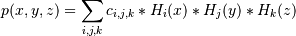

numpy.polynomial.hermite.hermval3d¶
- numpy.polynomial.hermite.hermval3d(x, y, z, c)[source]¶
Evaluate a 3-D Hermite series at points (x, y, z).
This function returns the values:

The parameters x, y, and z are converted to arrays only if they are tuples or a lists, otherwise they are treated as a scalars and they must have the same shape after conversion. In either case, either x, y, and z or their elements must support multiplication and addition both with themselves and with the elements of c.
If c has fewer than 3 dimensions, ones are implicitly appended to its shape to make it 3-D. The shape of the result will be c.shape[3:] + x.shape.
Parameters : x, y, z : array_like, compatible object
The three dimensional series is evaluated at the points (x, y, z), where x, y, and z must have the same shape. If any of x, y, or z is a list or tuple, it is first converted to an ndarray, otherwise it is left unchanged and if it isn’t an ndarray it is treated as a scalar.
c : array_like
Array of coefficients ordered so that the coefficient of the term of multi-degree i,j,k is contained in c[i,j,k]. If c has dimension greater than 3 the remaining indices enumerate multiple sets of coefficients.
Returns : values : ndarray, compatible object
The values of the multidimensional polynomial on points formed with triples of corresponding values from x, y, and z.
See also
Notes